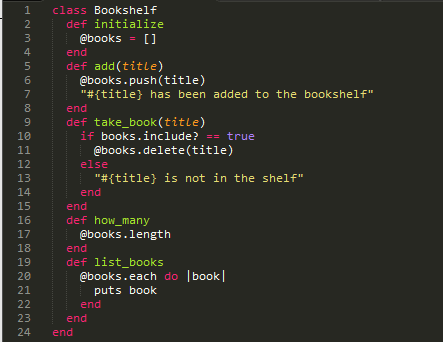

Week 5 Phase 0
Classes
11/9/2014
This week’s post I going to focus on create your own class in Ruby. When creating a class in Ruby you creating a new Object. For this week I will give some code example below of a Class I created called Bookshelf.

The Bookshelf class will make a Bookshelf object that can storage books, keep track of how many books are in the bookshelf, remove books from the bookshelf and list the books that are currently in the bookshelf. There are a few things I want to point out. The first thing is how you create a Class which is show on line 1 of the code. Creating a class is as simple as class plus the name of the class you are making. Just make sure you have the first letter of the class name uppercased because class are constant variable which I won’t into now.
The second thing I want you notice on line 2 of the code example which is the initialize method. When you make one of these methods in Ruby will run this code automatically when you make instance of the class. So, for our example it will make the empty array @books.
This brings instance variables which are variable that can be access throughout the class. You can see the instance variable @books used throughout the Bookshelf class. The @ before the variable name lets Ruby know that this variable is an instance variable.
Well, that’s it for now until next time.